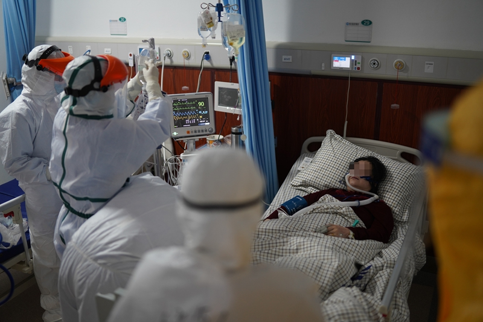

叶青武汉日记：武汉保卫战进入全面总攻
原文链接 备份链接 岛语 非常时期，武汉成了全国人民挂念、祈福的城市。封城后，武汉人民的真实生活是什么样？ 正和岛自1月26日起特别推出《叶青：我在武汉疫区的第N天》专栏。叶青是一位定居武汉40年的市民，也是一名学者和官员。接下来的一段时 …
发端于武汉的新冠肺炎，迄今已盘桓两月有余。病毒从何而来尚不完全明了，疫情止于何处，却已清晰。
这是一场人类与病毒的较量，惜乎武汉疫情警报拉响姗姗来迟，而实力一度被低估的对手已沿着发达的交通线和城市圈层，迅速向外逸散。一座座城池渐次陷落。何时收复？
关于疫情拐点将至的预测纷至沓来，但患者数量还在增长，前线交锋突现危情！
2020年2月13日，湖北报告确诊新冠病例激增，一日14840例，为疫情出现以来之最。其原因，与湖北政府延迟报告2月4日新设“临床诊断”患者分类下的人数统计有关。
而此时，湖北以外省份的防疫已初见成效，全国31个省份继续倾尽全部医疗资源和病毒抗衡。2月11日，全国新冠肺炎新增确诊病例2015例，新增死亡97例，新增疑似病例3342例，较2月10日的增幅分别下降18.7%、10.2%、5.5%，同时，湖北以外地区新增确诊病例已连续8日下降，数据显示疫情向外扩散得到一定程度的遏制。
2月13日临床诊断病例统计口径突变，撼动全局战势。猝不及防的数据调整影响着对新冠疫情发展趋势的判断，也为防疫工作的决胜攻坚投下阴影。那些延误多日才被并入确诊患者统计的病人，多数人只是被送往隔离点，不能得到及时有效的治疗，他们中的相当大一部分，又不可避免转为重症，让前方紧绷的医疗资源再度告急！
打赢这场战役，湖北最为关键。身处中国腹地、九省通衢要塞，疫情发源于此，向全国扩散，早期的输入型病例，已经陆续在各地转化为本地传播。
为遏制疫情，各地要阻断人际传播，不但严防死守的措施要升级加码，还要重新调配全部医疗资源应对随之而来的战役，同时更要抽调兵马援助湖北。由于湖北最初疏于防守，病患数量不断累积，医护人员疲惫不堪，本地床位和医疗人员以及物资储备都不足以应对，中央政府持续不断从各地以及军队调集力量进行增援。
大会战打响，战场遍布全国。如果湖北疫情不能及时遏制，也将影响其他省份的作战形势。
无论是就病患的绝对数字、相对数字而言，还是就控制疫情扩散的关隘地位而言，湖北之于全国都是赢得这场防疫战的决胜之地。而准确的疫情估计正是决胜的基础。
湖北之战，武汉并非惟一的重镇。早在疫情现出端倪的初期，当病毒的毒性和疫情的严重性还仅仅被封锁在小范围的讨论之中，疫源地武汉的百姓已经不知不觉中被病毒感染，随着春节前繁忙的返乡人潮，较大部分的武汉居民流向湖北在武汉以外的16个地市。
1月20日，病毒“人传人”的消息首次通过一位学者之口告知全国，武汉防疫战方才升级。16个地市的疫情却一度仍被忽视，直到最靠近武汉的黄冈、孝感曝出大规模确诊病例，才引起广泛警觉。

无论是就病患的绝对数字、相对数字而言，还是就控制疫情扩散的关隘地位而言，湖北之于全国都是赢得这场防疫战的决胜之地。
湖北全境的真实情况至关重要。财新记者遍访16个地市的防疫指挥部、有关防疫部门、医院、社区、企业，也和患者、市民有着深入交流，为读者勾勒出一幅防疫全景图。终止疫情的密码就在其中。
我们看到，在抗疫最前线，医务工作者奋力拼搏，大量基层工作者包括许多普通市民也都积极加入抗疫战，灾难来临时激发出的勇气、信心、责任和许多来自草根的智慧和毅力支撑着漫长战线上的斗争，决策者对战况准确的估计、精确调度和科学果断的决策将决定最终战果。
资源和制度的积累被病毒试炼。防疫工作能够早启动、早布局的少数地区，争取了宝贵的备战时机，患者确诊数字较少。根据指令按部就班展开防控的，其中医疗资源相对充足、经济更发达的地区具有天然优势。而那些面临信息不畅、行动迟滞、人力和物资匮乏的地区，则继武汉之后因疫情严重而不得不拉响警报。向农村扩散的趋势最令人心焦。
公共卫生安全危机，让区域发展不平衡之下的基层短板再次暴露。很多医院尤其是乡镇一级，最初陷入措手不及，医护人员不足、物资不足，只得临时抱佛脚，又带来医护人员的感染加重疫情。财新记者还了解到，患者数据统计迟滞问题和相应的救治不及时不仅出现在武汉。
2月13日，中共中央政治局常委、国务院总理、中央应对新冠肺炎疫情工作领导小组组长李克强主持召开领导小组会议，会议决定，孝感、黄冈等疫情严重地区要采取和武汉同等的隔离救治措施。湖北和武汉要进一步强化离汉离鄂通道管控，切实做到内防扩散、外防输出。基层治理能力的夯筑，也应当成为长期不懈的追求，方能从容应对未来之疫。
面对巨大挑战，2月7日，国务院联防联控机制新闻发布会上，国家卫生健康委宣布了新的救助模式，让16省“一省包一市”。援助机制从之前“统一调度”向“对口援助”转变，将资源调度的权力从中央下放到地方，援助方和受援助方之间商定具体援助方案，充分发挥地方政府的积极性和创造性。
部分省（如江苏）在接到对口支援要求后，再一次将任务下沉分解，由地级市对口被援方的区、乡镇或街道，实现二层级式的对口援助体系。2月10日，新的对口援助方案公布，16省增加为19省。最新的对口方案中被援助的地区未曾改变，援助方减少了北京、上海、四川、河南、陕西和安徽，增加了黑龙江、辽宁、内蒙古、海南和宁夏。
防疫大决战来临，投入继续加大，接下来，实事求是、公开透明方能助力最有效调配人力和资源。而政府资源受限，调配能力受限的地区，更应该以开放和包容的姿态，充分调动民间救援力量参与。
而严防死守之下，疫情对产业和金融的冲击也开始显现。在十堰、荆门、仙桃等地，防疫和生产之间的两难需要作出平衡。尽早复产不但有助于保障防疫物资的供给，也有助于稳定民心，与此同时，防疫要求升级，则带来双重挑战。取得广泛的社会理解和支持，将有助于加速赢得此“疫”。
伴随湖北新增确诊人数惊人跃升的，还有一场官场地震。2月13日，在疫情信息于2019年12月31日首度向社会正式公布的44天后，有资深政法背景的上海市长应勇接替蒋超良，出任湖北省委书记；山东省委常委、济南市委书记王忠林接替企业出身的马国强，出任湖北省委常委、武汉市委书记。这是继国家卫健委副主任王贺胜出任湖北省委常委、省卫健委党组书记、主任后，湖北省委高层再作出人事调整。
这并非扭转战势的惟一方略。只有形成下情上达，上行下效的决策闭环，才有更好的机会防患于未然。而这也许是每一次灾难试图传递的重要信息，不应当再被忽视。疫情将止于实事求是，止于正确决策，止于制度变革，更止于千千万万普通人的支持和奉献。
大疫背后，沉疴已久。湖北之困，也是中国的缩影。湖北16城保卫战，已然成为全国病毒攻防战中的重要一役。湖北胜则全国胜。
——编者
注：本文刊发于《财新周刊》2020年第6期，原题为：封面报道|保卫湖北
此文限时免费阅读。感谢热心读者订阅财新通，支持新闻人一线探求真相！成为财新通会员，畅读财新网！
更多报道详见：【专题】新冠肺炎防疫全纪录（实时更新中）
[《财新周刊》印刷版，各大机场书店零售；按此优惠订阅，随时起刊，免费快递。]
原文链接 备份链接 岛语 非常时期，武汉成了全国人民挂念、祈福的城市。封城后，武汉人民的真实生活是什么样？ 正和岛自1月26日起特别推出《叶青：我在武汉疫区的第N天》专栏。叶青是一位定居武汉40年的市民，也是一名学者和官员。接下来的一段时 …
原文链接 备份链接 【财新网】（实习记者 黄晏浩 记者 黄蕙昭 宿慧娴 单玉晓 覃建行 黄姝伦 实习记者 王颜玉）疫情持续爬坡。1月28日国家卫生健康委新闻发布会显示，过去一天新增1771名确诊病例，这相当于新冠发病以来此前已有总 …
原文链接 备份链接 凤凰新闻客户端 凤凰网在人间工作室出品 *15分钟的路程，我花了15天时间* @高风 坐标：武汉&武汉 肺炎与爱情有2个相似之处：一是身体会有征兆，让人呼吸紧张、情绪不稳；二是无可幸免，稍没注意便会染上，但也 …
原文链接 备份链接 文 | 《财经》数据研究员 徐进 图 | 《财经》视觉中心 编辑 | 谢丽容 今日，我们来重点说说湖北的疫情数据。根据湖北卫健委的官方数据，2月12日0时-24时，湖北省新增新冠肺炎病例14840例(含临床诊断病 …
原文链接 备份链接 作为中国疾控中心原副主任，杨功焕是坦诚的。多年国际组织和疾控系统工作的经验让她对新冠病毒疫情中萌生的一些问题更加敏感。 她认可武汉“封城”，对中国公共卫生硬实力有信心，但又不满新冠病毒疫情初期的反应迟缓，质疑公共卫生的 …